Editing the flattened geometry in the nailboard view
In some cases, the flattened geometry may not fit inside the boundaries of the drawing view.
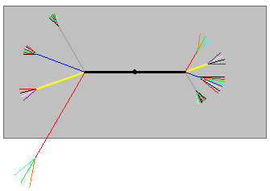
In these cases, you can edit the flattened geometry to fit inside the drawing board.
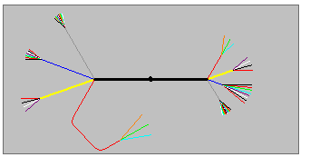
You can use the Insert Bend command to create a bend on the flattened geometry so that it fits in the nailboard drawing view. You can define the radius and sweep angle for the bend. Solid Edge inserts the bend based on this information, while maintaining the overall length of the branch.
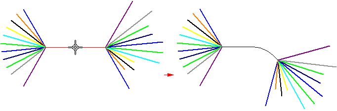
If you select the main trunk line of the harness, you have four choices for the bend direction,
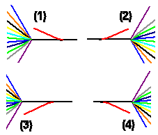
but only have two choices if your selection is not the main trunk line.
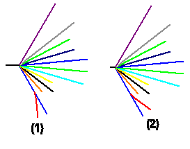
You can use the Flip option on the Insert Bend command bar to flip the direction of the bend.
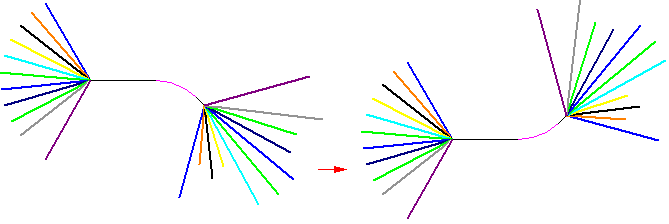
After placing a bend, you may need to edit it. You can select the bend,
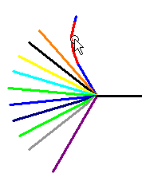
and edit the radius or sweep angle values on the command bar.
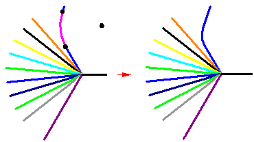
You can also drag the handles to edit the selected bend.
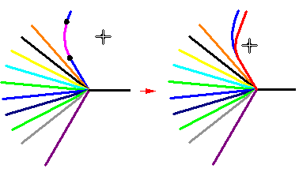
You can rotate the segment by clicking and dragging the segment (A) to fit in the view (B).
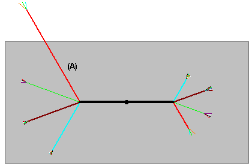
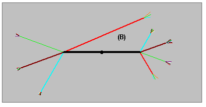
Rotating the segment does not change the overall length of the segment.
How do I
Insert a bend in a nailboardEdit a nailboard bend
Look up more details
Insert Bend commandInsert Bend command bar